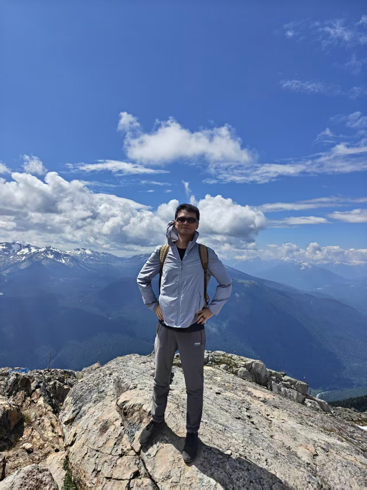

More About Me
Hiking
Outside research and teaching, I enjoy hiking. I especially like multi-day mountain treks, where the pace is slow enough to notice changing weather, forests, ridgelines, and the quiet rhythm of walking for several days.
I also enjoy local hikes and mountain trails. Some of my favorite places include Grouse Grind and Joffre Lakes Park, both of which offer very different but memorable hiking experiences: one is a steep and energetic climb, and the other is a beautiful alpine route with lakes, glaciers, and mountain views.
